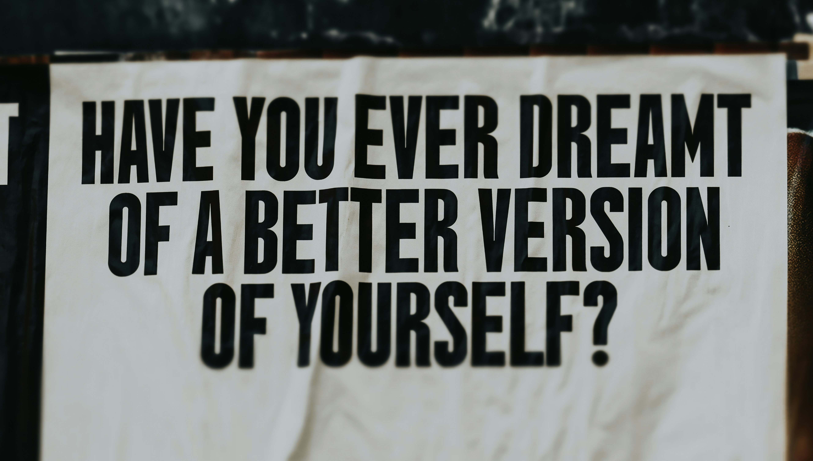

Are you really different?
Almost everyone dreams of changing their life. Wealth. Freedom. Success. Making doubters regret underestimating them. You ever think your ambition makes you special? Funny thing is... millions of people secretly believe they're destined for more too. Did you know that?
